Creating a font with Calligro involves generating a font template, drawing characters in it, and then exporting a bitmap font. The template can be filled using a regular TTF font and/or by drawing in any graphics editor.
To see examples of how to use an exported font with different game engines and frameworks, check out the samples.
To get help or report issues, join the Ideas Almanac Discord server.
Use the "File" menu to create or open a project. When a project is open, the UI is divided into three sections:
In the Template Settings section, you define the template - an image with blank spots where you'll draw your characters.
Press the "Preview Template" button at the bottom to see how it looks. For a new project, you'll see a grid of transparent squares. Each square corresponds to a different character (like "a", "b", "c", etc.), with 95 characters included by default.
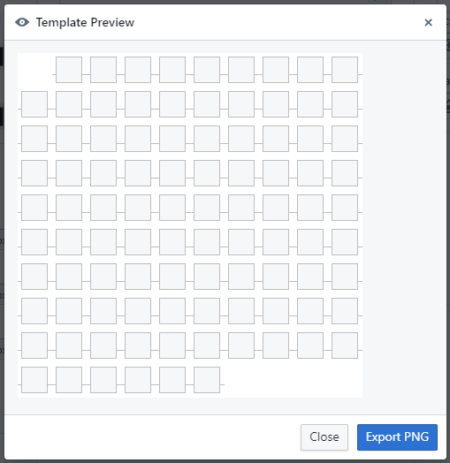Close the preview and check out the "Prefill" input at the top of Template Settings. It lets you choose a regular TTF font to prefill the template. Once you select a font, you’ll immediately see a sample text preview on the right.
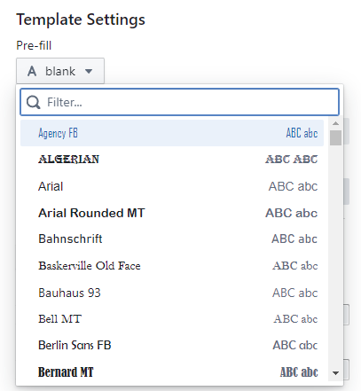 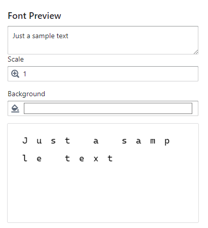You can also adjust the font fill color, outline color, and outline width using the inputs below. When you're done, press "Preview Template" again to see the updated template with your chosen font and colors.
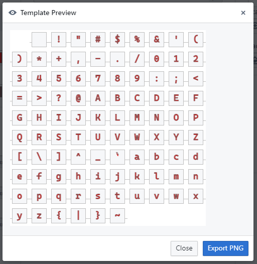For technical reasons, in the web app the prefill dropdown only shows a limited set of commonly used fonts. The desktop app allows you to choose from any font installed on your system.
Below the Prefill input, you'll find the "Character Set" button. Click it to open a dialog where you can choose the characters to include in your template. You can enter any characters manually, or start from a preset like "Basic Latin" or "Hiragana" using the "Override with preset" button.
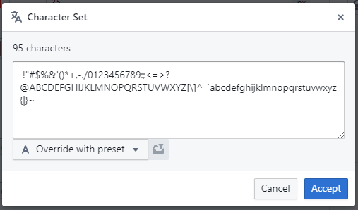 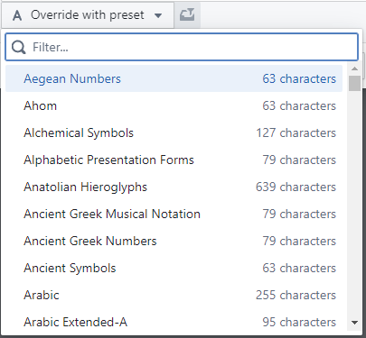Emojis and other characters made out of multiple code points are not supported. You can however include any graphics you want if you assign them to characters you won't use otherwise.
Below the character set input are the width, height, and base inputs. Width and height define the pixel size of each character.
The base sets the vertical position where the character "sits". Anything below the base will extend downward - like in "j" or "g". For example, a character with a height of 100 and a base of 70 will have 30 pixels of space below the base.
When previewing the template, horizontal lines between character slots indicate the base for each character.
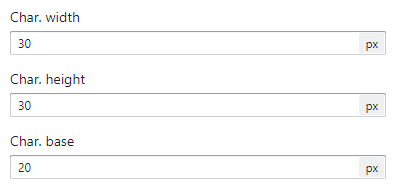 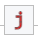Below the size and base settings is the "Size Overrides" section. This lets you define custom sizes for specific characters.
Click the "+" button to open a dialog where you can add characters to the override list. For example, enter "abc" and click "Add all" to include "a", "b", and "c".
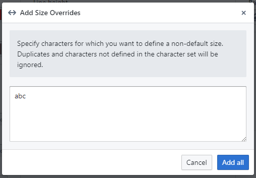Select a character like "a" from the dropdown next to the "+" button. Width and height inputs will appear. Modify them and press "Preview Template" to see the updated size in the template.
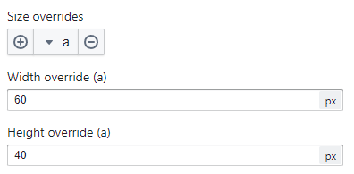 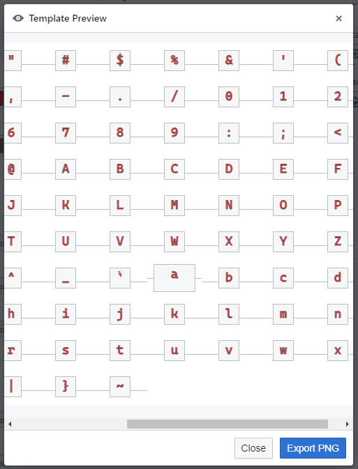Before exporting a template, you can adjust settings in the Font Settings section (explained below) and preview how the font will look. These settings don't affect the exported template. If you're satisfied with the results using just the Prefill inputs, you may skip exporting. But if you want to draw your own characters, you'll need to export the template.
To export the template:
Aseprite export is available since Calligro 2.1.0.
You now have an image file that can be edited in any graphics editor. Remember the horizontal lines indicate character baselines. Once you're done drawing, import the file back into Calligro.
To import a filled template, choose "File → Import Template". Your custom characters will immediately appear in the font preview.
For subsequent imports of the same template (i.e. after you've made some adjustments in a graphics editor) you can press the "Reimport" button next to the project name to quickly reimport the last loaded template. You can also enable the "Auto detect changes" option (in the drop down menu next to the button) to have Calligro automatically reimport the template whenever the file is modified.
Aseprite import and the quick/auto reimport are available since Calligro 2.2.0.
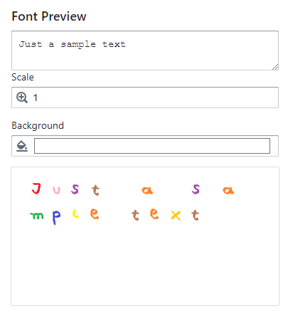After importing, the Template Settings section becomes disabled by default. You can still make changes by checking "Edit anyway" at the top, but keep in mind those changes won’t affect the font unless you export and import the template again.
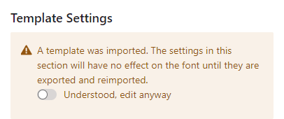The Font Settings section lets you adjust additional properties like spacing, line height, and kerning. These can still be changed after the template has been imported.
Horizontal and vertical spacing define the space in pixels between characters. If spacing is set to 0, characters will be directly adjacent to one another (as defined by the template sizes).
Line height is the vertical space between lines of text. The actual space between lines is the line height plus vertical spacing.
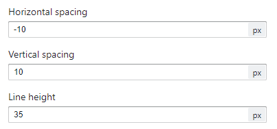 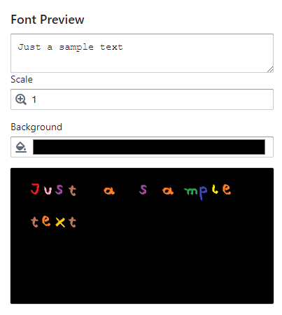Kerning pairs let you define custom spacing between specific character pairs. For example, if you want "a" to be closer to "b" than "c", add a kerning pair for "ab" with a negative value. This value sets how much the second character moves relative to the first.
Altought kerning pairs are part of the BMFont specification, not all game engines support them. This is often not documented, so you may need to test if your engine supports kerning. Godot is known to support it.
To add a pair, click the "+" button next to the kerning pairs input. A dialog will appear where you can enter the characters and spacing. Click "Add" to save the pair.
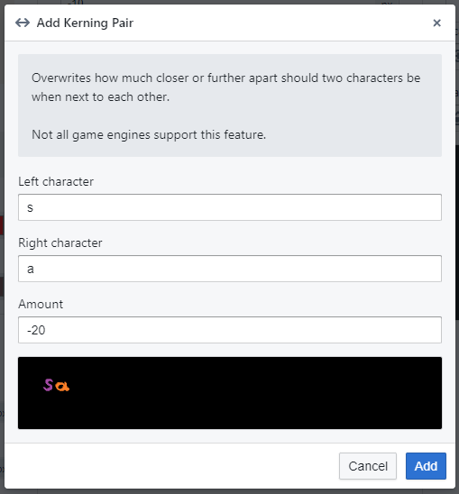You can edit an existing pair by selecting it from the dropdown and adjusting the distance. To remove a pair, press the "-" button next to the dropdown.
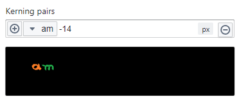 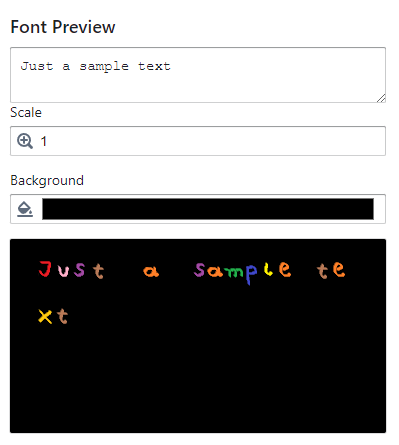Once you're happy with your font, export it using "File → Export Font". You can choose between TXT and XML formats. Different game engines require different formats. Unfortunately, this often isn’t documented, so you may need to try both.
Some known examples:
| Godot | TXT |
| LibGDX | TXT |
| LÖVE | TXT |
| Heaps.io | TXT |
| Phaser | XML |
| HaxeFlixel | XML |
To see examples of how to use an exported font with different game engines and frameworks, check out the samples.
To get help or report issues, join the Ideas Almanac Discord server.